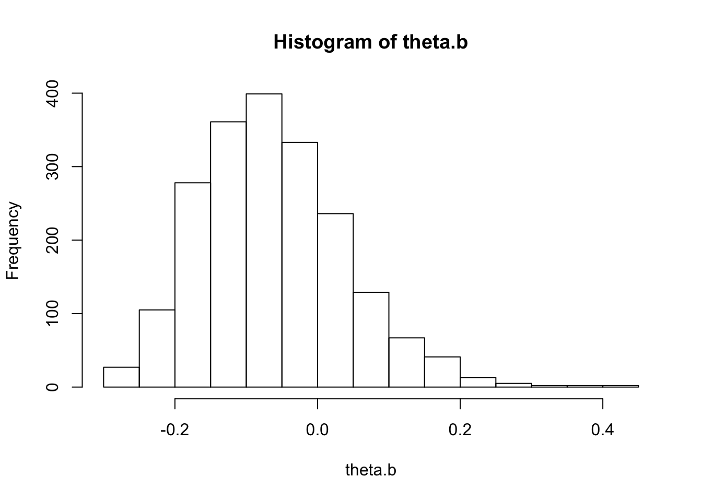
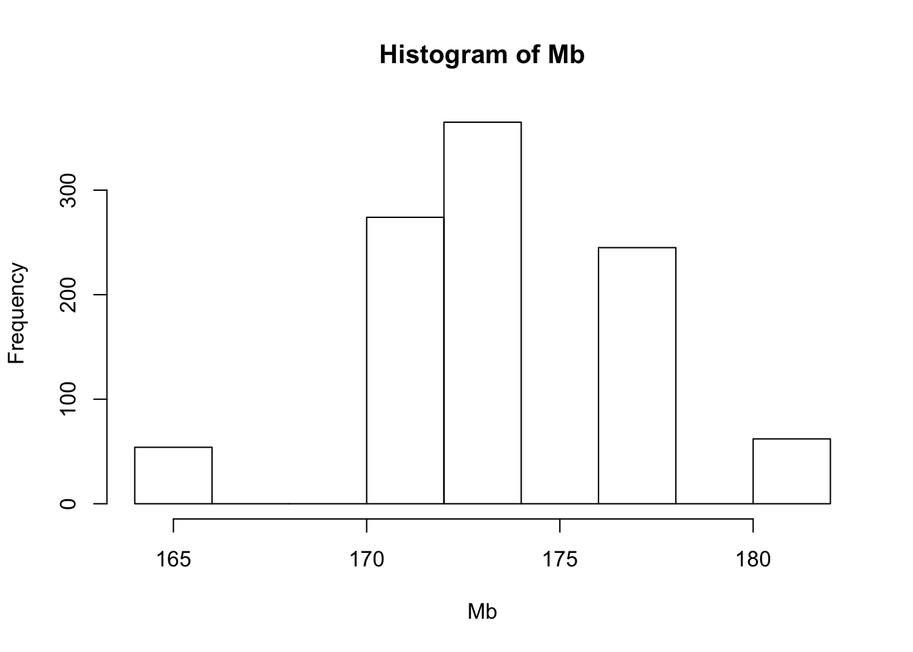
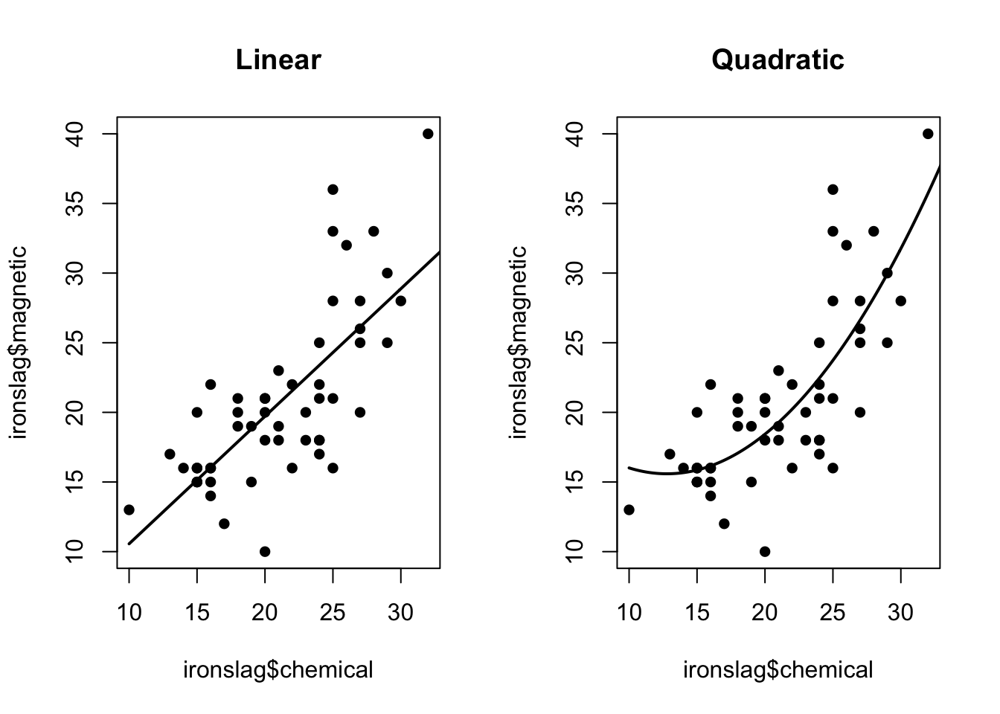
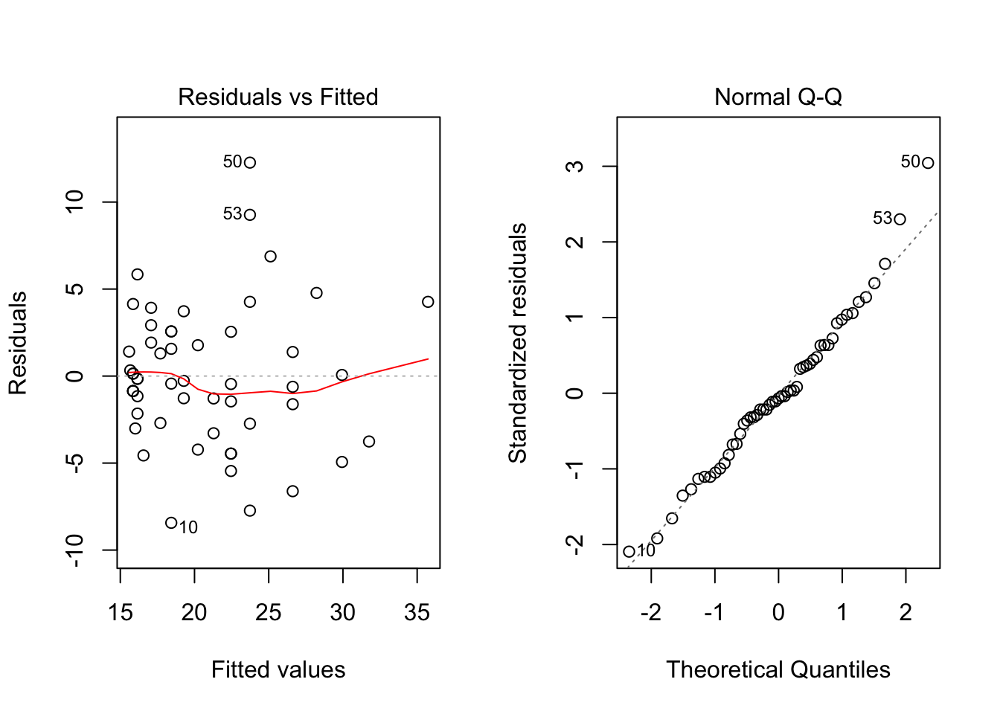
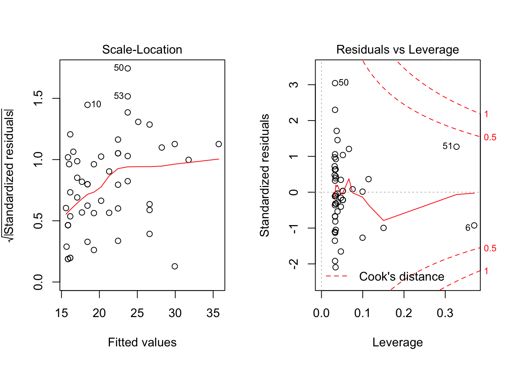
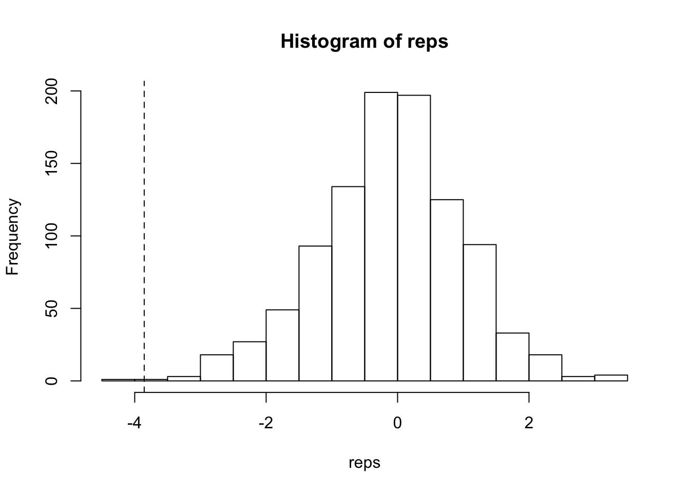
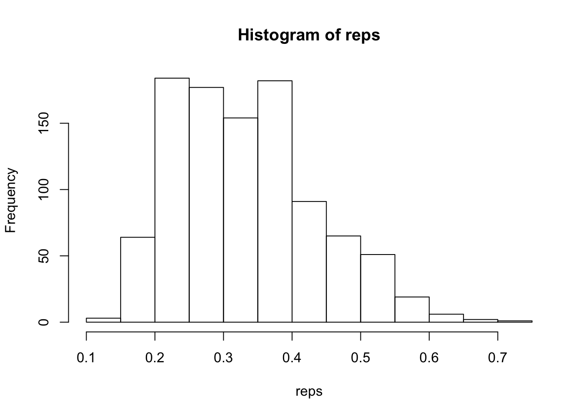

Last updated: 2018-02-22
Code version: d3c2fe9
Teacher: Rene Eijkemans
Learn from data what the data-generating process is.
Resampling from sample, not theoretical distribution
Non-parametric Monte Carlo methods
Possible inference - Hypothesis tests - Assess bias - Confidence interval
Leap of faith
Any methods for statistical inference based on random sampling, where simulation is used to estimate parameters
Parametric MC: sample from given probability distribution Non-parametric MC: sample from observed sample
Non-parametric MC, B. Efron, 1979
Create microworld, sample takes place of population
Sample treated as finite pseudo-population
Leap of faith: drawing samples from observed sample is close to drawing samples from population
dat <- c(174, 165, 182, 171, 178)
sample(dat, size = length(dat), replace = T)[1] 171 178 171 178 182library(boot)
av <- function(x, i) {mean(x[i])}
obj <- boot(data = dat, statistic = av, R = 500)
mean(obj$t)[1] 174.0588obj
ORDINARY NONPARAMETRIC BOOTSTRAP
Call:
boot(data = dat, statistic = av, R = 500)
Bootstrap Statistics :
original bias std. error
t1* 174 0.0588 2.55614str(obj)List of 11
$ t0 : num 174
$ t : num [1:500, 1] 175 169 174 171 177 ...
$ R : num 500
$ data : num [1:5] 174 165 182 171 178
$ seed : int [1:626] 403 5 -1346850345 656028621 13211492 1949688650 95765173 -1737862641 -58526954 1501289920 ...
$ statistic:function (x, i)
..- attr(*, "srcref")=Class 'srcref' atomic [1:8] 2 7 2 33 7 33 2 2
.. .. ..- attr(*, "srcfile")=Classes 'srcfilecopy', 'srcfile' <environment: 0x7fc4cb115c30>
$ sim : chr "ordinary"
$ call : language boot(data = dat, statistic = av, R = 500)
$ stype : chr "i"
$ strata : num [1:5] 1 1 1 1 1
$ weights : num [1:5] 0.2 0.2 0.2 0.2 0.2
- attr(*, "class")= chr "boot"
- attr(*, "boot_type")= chr "boot"boot.ci(obj)Warning in boot.ci(obj): bootstrap variances needed for studentized
intervalsBOOTSTRAP CONFIDENCE INTERVAL CALCULATIONS
Based on 500 bootstrap replicates
CALL :
boot.ci(boot.out = obj)
Intervals :
Level Normal Basic
95% (168.9, 179.0 ) (169.1, 178.8 )
Level Percentile BCa
95% (169.2, 178.9 ) (168.6, 178.2 )
Calculations and Intervals on Original Scale
Some BCa intervals may be unstableTo program: write function that calculates parameter, and takes index for row numbers
Take expected value of bootstrap statistic, which is by definition the mean of the bootstrap statistics
Standard error is the standard deviation of the bootstrap distribution (since standard error tries to estimate the SD of the sampling distribution of the statistic)
Bias = expected value for parameter in sample - true value When bias is much lower than standard error, probabilby no bias bias / std.error < 0.25 (by Rizzo, or .1), no real bias
You can bootstrap the bootstrap, or jackknife the boostrap (which is faster)
For health technology, you get right-skewed data, but you need to use the mean because you want to describe the population (and get information on the outliers too). Bootstrapping works very well
data(patch, package = "bootstrap")
patch subject placebo oldpatch newpatch z y
1 1 9243 17649 16449 8406 -1200
2 2 9671 12013 14614 2342 2601
3 3 11792 19979 17274 8187 -2705
4 4 13357 21816 23798 8459 1982
5 5 9055 13850 12560 4795 -1290
6 6 6290 9806 10157 3516 351
7 7 12412 17208 16570 4796 -638
8 8 18806 29044 26325 10238 -2719n <- nrow(patch)
B <- 2000
theta.b <- numeric(B)
theta.hat <- mean(patch$y) / mean(patch$z)
for (b in 1:B) {
i <- sample(1:n, size = n, replace = T)
y <- patch$y[i]
z <- patch$z[i]
theta.b[b] <- mean(y) / mean(z)
}
hist(theta.b)
bias <- mean(theta.b) - theta.hat
se <- sd(theta.b)
bias[1] 0.008774365se[1] 0.1020246quantile(theta.b, probs = c(.025, .975)) 2.5% 97.5%
-0.2339987 0.1633148 Bootstrap with replicate
dat <- c(174, 165, 182, 171, 178)
n <- length(dat)
Mb <- replicate(1000,
expr = {y <- sample(dat, size = n, replace = T);
median(y)})
hist(Mb)
M.H. Quenouille in 1949 for estimating bias J.W. Tukey in 1958 for estimating standard error
Leave-one-out cross-validation, so limited to N samples where N is sample size.
Each time, the sample size is 1 smaller.
dat <- c(174, 165, 182, 171, 178)
for (i in 1:length(dat)) print(dat[-i])[1] 165 182 171 178
[1] 174 182 171 178
[1] 174 165 171 178
[1] 174 165 182 178
[1] 174 165 182 171With patch data
n <- nrow(patch)
theta.hat <- mean(patch$y) / mean(patch$z)
theta.jack <- numeric(n)
for (i in 1:n) {
theta.jack[i] <- mean(patch$y[-i]) / mean(patch$z[-i])
}
bias <- (n-1) * (mean(theta.jack) - theta.hat)
se <- sqrt((n-1)*mean((theta.jack - mean(theta.jack))^2))
bias[1] 0.008002488se[1] 0.1055278For median, not very smooth. Does not work well
Non-smooth -> not a small change, when we make a small change to the data
Median is not a nice statistic
The boostrap estimates of standard error and bias are themselves random variables
Jackknife for boostrap: take all bootstrap samples that do not contain observation \(i\). Gives \(n\) estimates of the standard error. Not a real jackknife, bootstrap samples can be included in multiple jackknife- samples.
Examples
BCa:
Second order accuracy, i.e. error -> 0; at rate 1/n
Standard normal BCI: no second order accuracy, nor transformation respecting
For accuracy in classification: bootstrap 0.632; calculates optimism for out of sample accuracy, (not the same as over-fitting) To account for inter-dependence of bootstrap sample, 63.2% of data are in the same Another problem was interdependence of of samples, so 0.632+ is best. Tibshirani (is against cross-validation)
data(patch, package="bootstrap")
theta.boot <- function(dat,ind)
{ y <- dat[ind,1]; z <- dat[ind,2]; mean(y) / mean(z) }
y <- patch$y; z <- patch$z
dat <- cbind(y,z)
boot.obj <- boot(dat, statistic = theta.boot, R=2000)
boot.obj
ORDINARY NONPARAMETRIC BOOTSTRAP
Call:
boot(data = dat, statistic = theta.boot, R = 2000)
Bootstrap Statistics :
original bias std. error
t1* -0.0713061 0.008716536 0.1028885print(boot.ci(boot.obj), type="all")Warning in boot.ci(boot.obj): bootstrap variances needed for studentized
intervalsBOOTSTRAP CONFIDENCE INTERVAL CALCULATIONS
Based on 2000 bootstrap replicates
CALL :
boot.ci(boot.out = boot.obj)
Intervals :
Level Normal Basic
95% (-0.2817, 0.1216 ) (-0.3013, 0.0928 )
Level Percentile BCa
95% (-0.2354, 0.1587 ) (-0.2299, 0.1871 )
Calculations and Intervals on Original ScaleAssessing model fit, not individual parameter estimates
data(ironslag,package="DAAG")
ironslag chemical magnetic
1 24 25
2 16 22
3 24 17
4 18 21
5 18 20
6 10 13
7 14 16
8 16 14
9 18 19
10 20 10
11 21 23
12 20 20
13 21 19
14 15 15
15 16 16
16 15 16
17 17 12
18 19 15
19 16 15
20 15 15
21 15 15
22 13 17
23 24 18
24 22 16
25 21 18
26 24 22
27 15 20
28 20 21
29 20 21
30 25 21
31 27 25
32 22 22
33 20 18
34 24 21
35 24 18
36 23 20
37 29 25
38 27 20
39 23 18
40 19 19
41 25 16
42 15 16
43 16 16
44 27 26
45 27 28
46 30 28
47 29 30
48 26 32
49 25 28
50 25 36
51 32 40
52 28 33
53 25 33a <- seq(10,40,0.1)
L1 <- lm(magnetic ~ chemical, data = ironslag)
par(mfrow=c(1,2))
plot(ironslag$chemical,ironslag$magnetic,main="Linear",pch=16)
yhat1 <- L1$coef[1] + L1$coef[2] * a
lines(a,yhat1,lwd=2)
L2 <- lm(magnetic ~ chemical + I(chemical^2), data = ironslag)
plot(ironslag$chemical,ironslag$magnetic,main="Quadratic",pch=16)
yhat2 <- L2$coef[1] + L2$coef[2] * a + L2$coef[3] * a^2
lines(a,yhat2,lwd=2)
plot(L2)
Now with cross-validation
attach(ironslag)
n <- length(magnetic)
e1 <- e2 <- numeric(n)
for (k in 1:n) {
y <- magnetic[-k]
x <- chemical[-k]
J1 <- lm(y ~ x)
yhat1 <- J1$coef[1] + J1$coef[2] * chemical[k] # prediction
e1[k] <- magnetic[k] - yhat1 # residual
J2 <- lm(y ~ x + I(x^2))
yhat2 <- J2$coef[1] + J2$coef[2] * chemical[k] + J2$coef[3] * chemical[k]^2
e2[k] <- magnetic[k] - yhat2 }
sqrt(c(mean(e1^2),mean(e2^2))) # estimates for the prediction error[1] 4.422267 4.225219detach(ironslag)Difference between in-sample error and out-of-sample error (with cross-validation), is a function of the sample size.
Best is repeated cross-validation
Diagnostic plot
Leave one out: - n-1 times the same model (is dependent on sample, high variability accross samples) - better for assessing performance of a single model
5 vs 10 fold validation - less dependent on sample
Permutation tests sample without replacement, scrambling the labels
Applicatoins:
99-999 permutations should suffice; technically this is a randomization test
Calculate p-value:
\[p = \frac{1+\sum_{b=1}^B{I(|\hat{\theta}_b| \geq |\theta|)}}{B+1}\]
Use \(B+1\) because the actual sample can be seen as 1 permutation
exp.lean <- c(7.53,7.48,8.08,8.09,10.15,8.40,10.88,6.13,7.90,7.05,7.48,7.58,8.11) # n=13
exp.obese <- c(9.21,11.51,12.79,11.85,9.97,8.79,9.69,9.68,9.19) # n=9
t0 <- t.test(exp.lean,exp.obese) # standard t-test
t0
Welch Two Sample t-test
data: exp.lean and exp.obese
t = -3.8555, df = 15.919, p-value = 0.001411
alternative hypothesis: true difference in means is not equal to 0
95 percent confidence interval:
-3.459167 -1.004081
sample estimates:
mean of x mean of y
8.066154 10.297778 g1 <- min(purrr::map_int(list(lean = exp.lean, obese = exp.obese), length))
z <- c(exp.lean, exp.obese)
n <- length(z)
R <- 999
reps <- numeric(R)
K <- length(z)
set.seed(123456)
for (i in 1:R) {
k <- sample(K, size = g1, replace = F)
x1 <- z[k]
y1 <- z[-k]
reps[i] <- t.test(x1, y1)$statistic
}
options(digits = 7)
(1 + sum(reps>=t0$statistic))/(R+1)[1] 0.999(1 + sum(reps<=t0$statistic))/(R+1)[1] 0.002(1 + sum(abs(reps)>=abs(t0$statistic)))/(R+1)[1] 0.002mean(abs(c(t0$statistic, reps)) >= abs(t0$statistic))[1] 0.002t0$p.value[1] 0.001410692hist(reps)
abline(v = t0$statistic, lty = 2)
Kolmorov-Smirnov test: differences in distributions (shape and location)
ks0 <- ks.test(exp.lean,exp.obese,exact=F)$statistic
z <- c(exp.lean,exp.obese)
R <- 999
reps <- numeric(R)
K <- 1:length(z)
for (i in 1:R) {
k <- sample(K,size=13,replace=FALSE)
x1 <- z[k]
y1 <- z[-k]
reps[i] <- ks.test(x1,y1,exact=F)$statistic
}
hist(reps)
abline(v = ks0, lty = 2)
p <- mean(c(ks0, reps)>=ks0);
ifelse(p>0.5, 2*(1-p), 2*p) # two-sided ASLks.test(exp.lean,exp.obese,exact=F)$p.value # p-value from KS test[1] 0.002This is very robust.
Only theoretically, when distribution under null-hypothesis is non-symmetric, null-distribution by permutation is allways symmetric.
Permutation tests condition on data we have (if we would not have had the same data if we would replicate the study). If we set the group sizes (e.g. in a trial).
Bootstrap generalizes better than permutation tests because it’s less dependent on sample
Fisher’s exact test fixes number of groups AND outcomes. It ignores randomness of observing data
sessionInfo()R version 3.4.3 (2017-11-30)
Platform: x86_64-apple-darwin15.6.0 (64-bit)
Running under: macOS Sierra 10.12.6
Matrix products: default
BLAS: /Library/Frameworks/R.framework/Versions/3.4/Resources/lib/libRblas.0.dylib
LAPACK: /Library/Frameworks/R.framework/Versions/3.4/Resources/lib/libRlapack.dylib
locale:
[1] en_US.UTF-8/en_US.UTF-8/en_US.UTF-8/C/en_US.UTF-8/en_US.UTF-8
attached base packages:
[1] stats graphics grDevices utils datasets methods base
other attached packages:
[1] boot_1.3-20
loaded via a namespace (and not attached):
[1] Rcpp_0.12.15 digest_0.6.15 rprojroot_1.3-2 backports_1.1.2
[5] git2r_0.21.0 magrittr_1.5 evaluate_0.10.1 rlang_0.1.6
[9] stringi_1.1.6 rmarkdown_1.8 tools_3.4.3 stringr_1.2.0
[13] purrr_0.2.4 yaml_2.1.16 compiler_3.4.3 htmltools_0.3.6
[17] knitr_1.19 This R Markdown site was created with workflowr